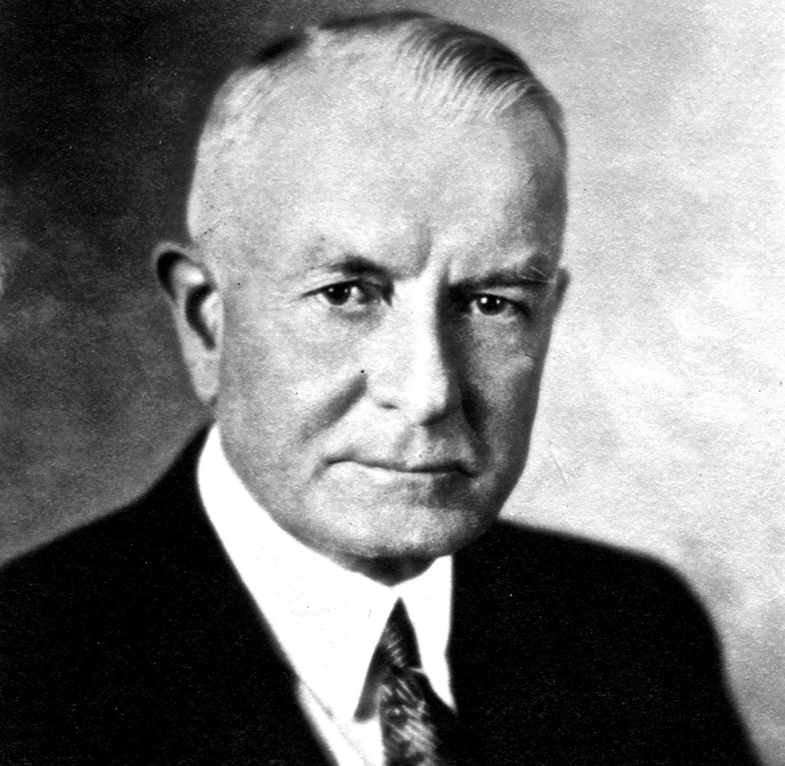

Thomas J. Watson

Thomas J. Watson was a pioneer in the development of accounting and computing equipment used today by business,
government, science and industry. He built a worldwide industry during his 42 years at IBM.
Mr. Watson was born in Campbell, N.Y., February 17, 1874. His first job was at age 18 as a bookkeeper in
Clarence Risley's Market in Painted Post, N.Y. Later he sold sewing machines and musical instruments before
joining the National Cash Register Company as a salesman in Buffalo. He eventually worked his way up to general
sales manager. Bent on inspiring the dispirited NCR sales force, Mr. Watson introduced the motto, "THINK," which
later became a widely known symbol of IBM.
| name |
add |
contact |
| lajit |
budhanilkantha |
9800000000 |
this is link